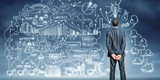
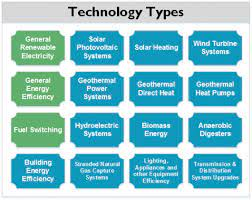
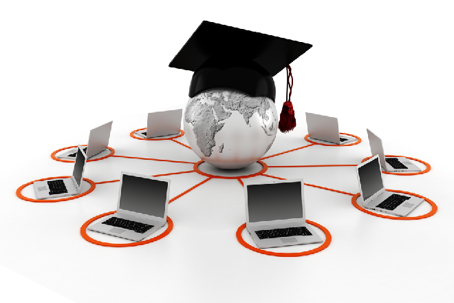
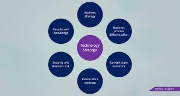
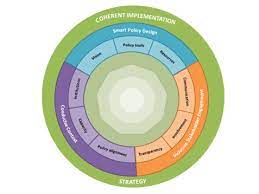

Technology in ideology
Very often, new is assumed to mean "better" in technology and engineering circles. The notion of appropriate technology developed in the twentieth century to describe situations where it was not desirable to use very new technologies or those that required access to some centralized infrastructure or parts or skills imported from elsewhere. The eco-village movement evolved in part due to this concern. Intermediate technology, more of an economics concern, refers to compromises between central and expensive technologies of developed nations and those which developing nations find most effective to deploy given an excess of labour, and scarcity of cash. In general, an "appropriate" technology will also be "intermediate".
Exactly contrary assumptions are made by those who promote transhumanism, posthumanism, technological singularity, which collectively were described as "Cosmist" views by Hugo de Garis. In these ideologies, technological development is morally good. These ideologies are seen as symptoms of scientism and mathematical fetishism by those who use those terms. Some consider them also to be symptoms of belief in capitalism.
In economics, definitions or assumptions of progress or growth are often related to one or more of the above assumptions. Challenging prevailing assumptions about technology and its usefulness has led to ideas like uneconomic growth or measuring well-being. These, and economics itself, can often be described as technologies, specifically, as persuasion technology — a concern covered in its own separate article.
Concepts in technology
Technological singularity
Precautionary principle
Strategy of technology (strategic use of advanced technology)
Technocapitalism
Emergent philosophy
Transhumanism
Posthumanism
Intermediate technology
Appropriate technology
Technology transfer
Technology lifecycle
Technology acceptance model
Internet
Communication
See also
Diffusion of innovations
Golden hammer
History of science and technology
High technology
Knowledge economy
Technique
Technology assessment
Timeline of invention
Technological convergence
List of technologies
List of "ologies

6 common types of technology
-
Communication
-
Energy
-
Electrical
-
Mechanical
-
Medical
-
Transportation

Education Technology
- Technology is ubiquitous and is entwined in every aspect of modern lifestyle and culture.
The digital revolution that is taking the world by storm has started making an ingress into
the domain of education. It is fast changing the way children learn and as a result,
technology is deemed to change the face of education for better, perhaps,
making it more affordable and accessible. With mobile and other wireless
technology devices like the IoT becoming increasingly used by the masses,
it only makes sense that schools and educational systems make effective use of
it by deploying technology in the classroom. Indeed, the flexible and non-intrusive
nature of today’s technology is making learning more captivating for the budding
generation.

Difficult Strategy
-
However, initially, it might appear to be quite a difficult strategy to navigate through, as conventional educators are on the fence hesitating to incorporate modern technology and gadgets into education, thinking of it as a distraction rather than seeing it as a strategic learning tool. There have also been skeptical debates about weighing the benefits and challenges of adopting technology in education. It is definitely worth delving deeper into the facts about the benefits of using technology in classrooms so that one can get a clear picture of how, when, and where it can be used to its best advantage.

Education By Implementing
-
Despite all the contemplations, there is, in fact, a dire need for the schools today to start adopting the modern trends in education by implementing cutting-edge technology into the learning process and thus creating an engaging and conducive learning environment for students to learn and grow. In that direction, K.R. Mangalam School, one of the notable educational institutions in the country, has taken a step forward towards embracing technology into education. With modern infrastructure facilities infused with the latest of technology, K.R. Mangalam School has significantly augmented its pedagogy with technologically improved teaching methods so as to provide a better learning experience for students.
